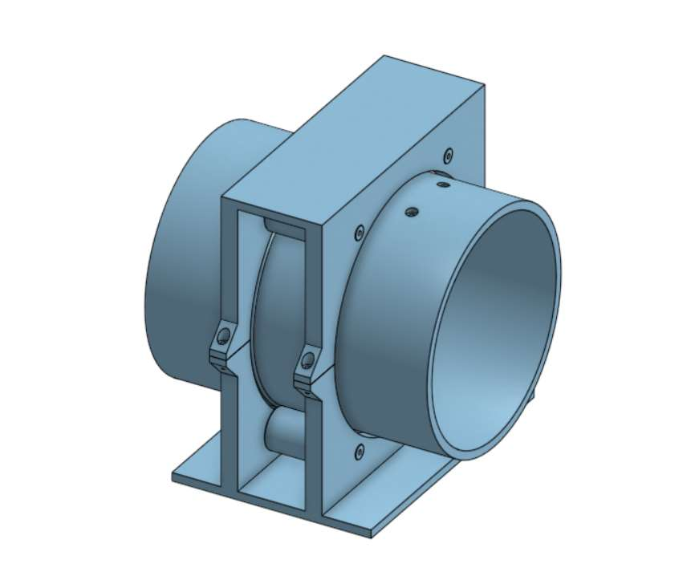
Over two weeks, we use the Spiral Design Process to plan, prototype, test, and refine a working prototype that solves a real problem. The final prototype has to include parts from the manufacturing technologies used in class: FDM, SLA on the Form 4 (the SLA part can be no larger than about one quarter of the build plate), and the laser cutter.
This page covers Week 1: choosing a problem, developing the first concept, and testing the critical features. This is a two-person project with James McAdam. We are building a rotary cutter for medical tubing that is used in quality control. It replaces an existing pneumatic chopping cutter that crushes thin tubes and leaves its blade exposed.
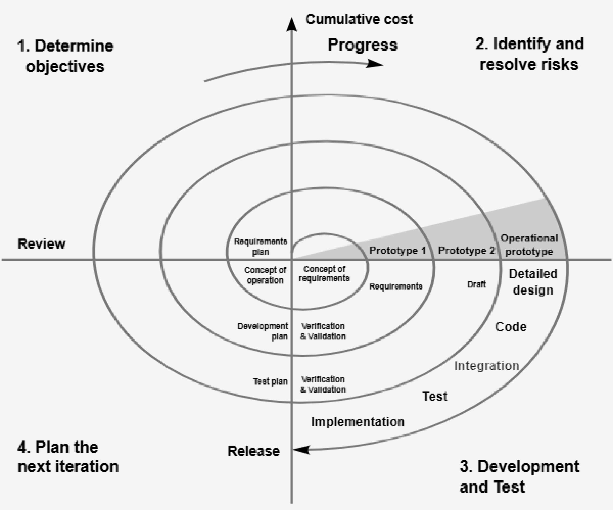
The spiral model diagram. Source: Wikipedia, Spiral model [3].
Barry Boehm introduced the spiral model in 1986 and published it in a wider paper in 1988, as a way to manage software projects where the biggest danger is building the wrong thing or hitting a risk late [1]. It is drawn as a spiral because the same four activities repeat in every loop, and each loop costs more than the one before it [2]. The names vary between sources. The assignment's names are planning, risk analysis, engineering, and evaluation, and they map onto Boehm's four quadrants like this:
| Quadrant | What it means | What it means for the tube cutter |
|---|---|---|
| 1. Planning: determine objectives, alternatives, and constraints | Decide what this loop has to accomplish and what limits it. | For this loop, the objective is to show that the rotation and the cut-depth motion can be done rigidly and predictably. |
| 2. Risk analysis: identify and resolve risks | Find what is most likely to fail and deal with it first. | The rotation and the cut-depth mechanism are the riskiest unknowns, so they come before any electronics or final parts. |
| 3. Engineering: develop and test | Build the prototype for this loop and test it. | A fully FDM prototype of the barrel, rollers, stand, and depth lobe. |
| 4. Evaluation: plan the next iteration | Review the result and fold what was learned into the next loop. | Class feedback and the test results go into the next version of the cutter. |
The spiral process is the natural order of designing something. The same general questions come back after every iteration, and each pass refines the design. For this project, the first loop goes after the riskiest unknowns, the rotation and the cut-depth mechanism, before any time is spent on electronics or final parts.
An FDM part is built from extruded lines of plastic laid down layer by layer. The strength inside a line is high, because the polymer chains are entangled. Between neighboring lines and between layers, the bond is weaker and the part has small voids [4][5]. As a result, a printed part is strong along the direction of the lines and weak across them, with the exact values depending on the polymer and on how well the layers fuse [4]. Formlabs cites an experiment where the yield strength of an FDM part in the Z direction was about 55% of its yield strength in the X direction [5]. That is one data point and the ratio changes with material and settings, but it shows that orientation is a design decision and not a slicer detail.
This is especially important for pins. It is natural to print a tall cylinder standing up, but without the right safety factor that is the weakest way to make a part that has forces acting across it from mating parts. For the cutter, the axle pins and anything that carries the cutting load need to be oriented so the load runs along the layers, or be moved to a different process.
An SLA print comes off the printer in a "green" state, where some polymer bonds are not fully formed. Post-curing with light and heat forms the missing bonds, which makes the part stronger and stiffer, but it also pulls the material together and causes minor shrinkage [6]. Formlabs builds the expected shrinkage into each resin's print settings, so a part printed and cured with the recommended steps should come out near its CAD size [6]. This means the compensation only works if the wash and cure steps are followed. Curing a resin beyond its optimum can also cause brittleness or warping, and each resin needs its own time and temperature [7].
Formlabs does not publish a single shrinkage percentage. What it does publish for the Form 4 is the result after compensation. Features from 1 to 30 mm have a typical tolerance of ±0.15% with a lower limit of ±0.02 mm, and features from 31 to 80 mm have ±0.2% with a lower limit of ±0.06 mm [8].
Any precision SLA part in the cutter, like the blade holder, will need its critical clearances checked after curing.
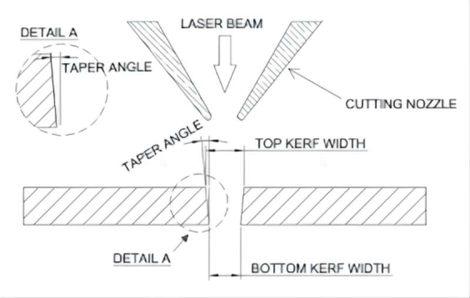
Kerf through the thickness of a sheet. The cut is slightly wider at the top than at the bottom. Source: Durmapress [9].
Kerf is the width of material that the laser removes. The cut line in the file sits in the middle of the kerf, so half of the kerf comes off each side of the line [9][10]. Parts come out slightly smaller than drawn, and holes come out slightly larger. Typical kerf for a CO2 cutter is about 0.18 mm in 1 to 3 mm acrylic and about 0.20 mm in 3 mm birch plywood [9]. It depends on the material, the thickness, and the power, and it can differ between cut directions on the same machine [12].
Kerf is only a fraction of a millimeter, but it is enough to change how tight-tolerance features fit together. The usual way to compensate is to measure the kerf for the specific material and then offset the cut paths by half the kerf. The offset goes outward on parts that should stay full size, and inward on holes [10][11]. To measure it, cut a square of known size, measure it with calipers, and take the difference. Half of that difference is the offset [11]. Kerf has to be accounted for on every part of the cutter that has a tight fit.
These are the problems we considered.
Cuts along two directions, uses a razor blade for the actual cut, fits two different types of tubing, and keeps the blade covered when not in use. It has to handle durometers from 50A to 72D and outer diameters from 0.21 to 0.40 in.
Two scissor lifts revolved around a remote center of motion for movement along an arc, a limited-slip differential so the arm can be powered with the least resistance, and a second axis of rotation for full mobility around half of a sphere.
Monitors soil moisture for different plants and drips water on a routine interval, adjusted by the sensor reading. Tracking air temperature and sun exposure would let it adjust for cloudy or cold days, when less water evaporates and more of the supplied water reaches the plant.
A universal cup holder that clamps to a desk. It keeps the desk clear while keeping a drink nearby during long work sessions. It would need to hold up to 5 lb and fit cups of different diameters.
I have nowhere within reach of my desk to put my backpack. This would be a cantilever that supports the backpack and a frame that attaches it to the desk.
A case with access to the ports and a clear lid so I can see the LEDs while troubleshooting. It also needs space to insert and remove SD cards. It would prevent damage to the board and clean up its look while still allowing me to work on it.
A phone stand with multiple angles so I can video call hands free.
Selected problem: a rotary medical tube cutter.
This problem is the most mechanically demanding of the ones we considered, and it has the strongest case for solving something meaningful.
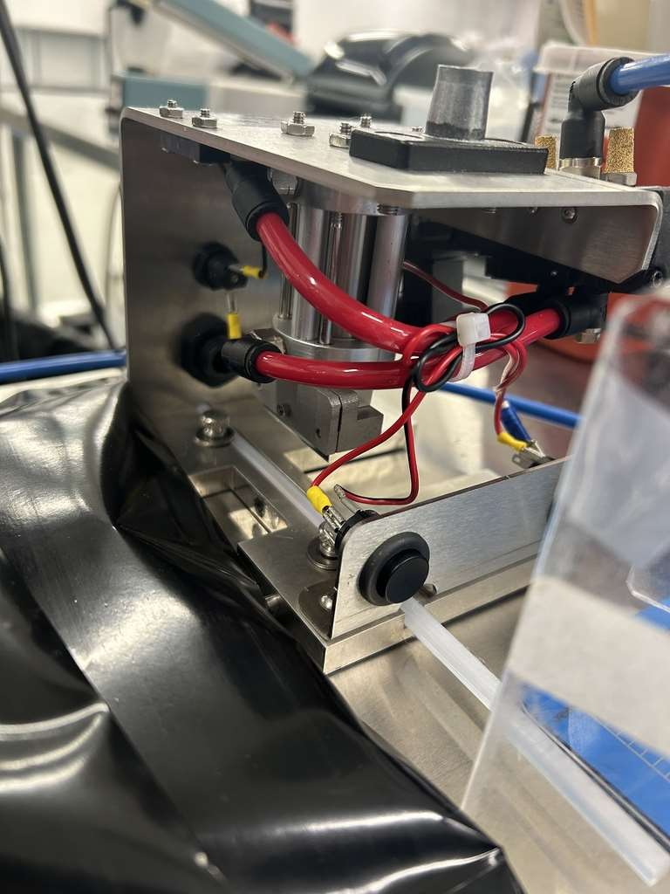
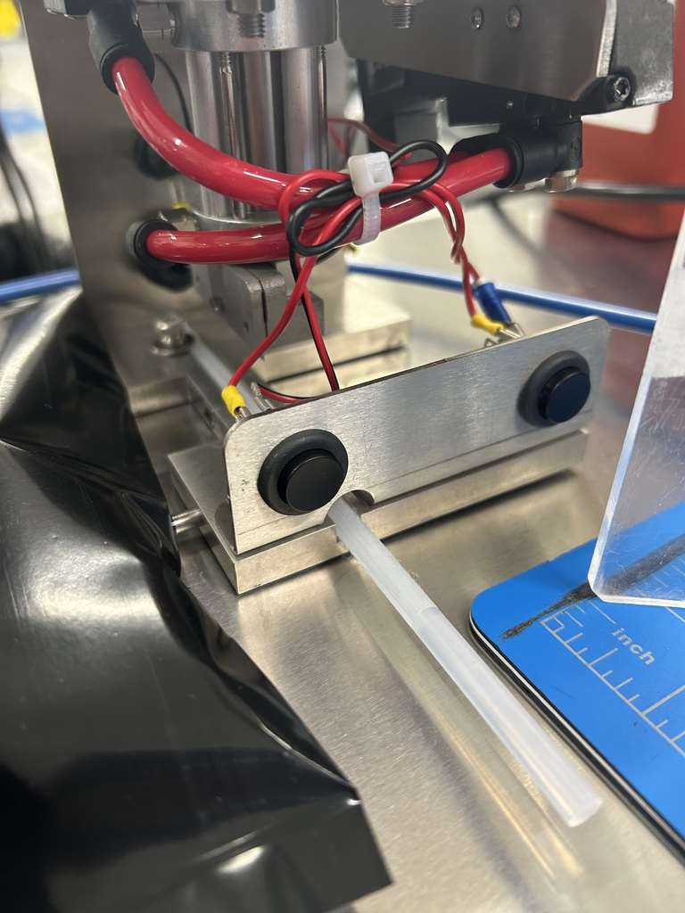
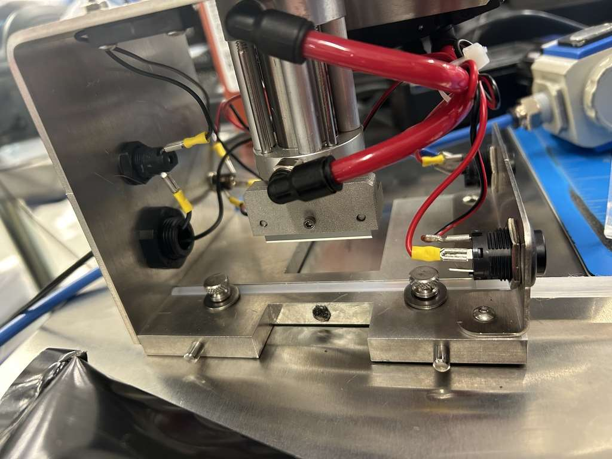
The existing cutter is pneumatic. A cylinder drives a razor blade straight down through the tube, and the operator fires it with the two push buttons. It has two problems:
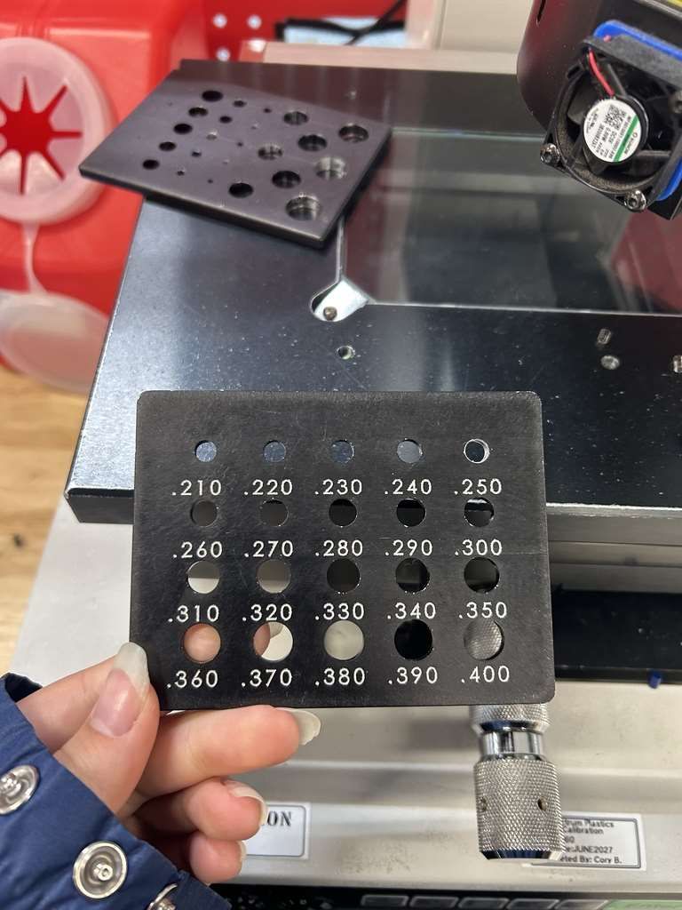
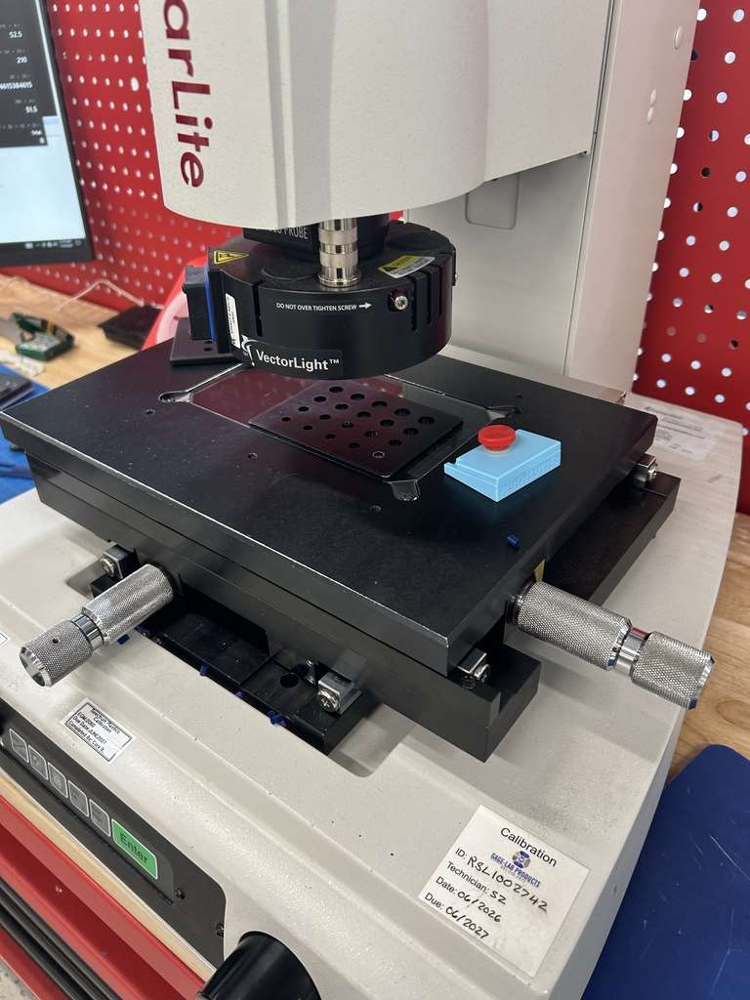
After cutting, the tube sample is carried to the measuring microscope on a plate. The plate has one hole for each tube size from 0.210 to 0.400 in, in 0.010 in steps, which covers the whole range the cutter has to handle. The measurement is taken on the cut face, so the cut has to be square, clean, and free of crushing.
Crushing: Instead of chopping, the blade rotates around the fixed tube and feeds slowly deeper into the wall. Only a small part of the wall is being cut at any moment, so the tube is never squeezed flat. One machine can then handle every durometer and diameter in the range by changing the feed and speed, not the blade.
Exposed blade: The blade lives inside the rotating barrel and is enclosed by the housing, so it cannot be reached during operation. Removable front guard plates cover it and come off only for blade changes.
| Requirement | Value |
|---|---|
| Tube outer diameter | 0.21 to 0.40 in |
| Tube durometer | 50A to 72D |
| Cut plane | Within a few thousandths of an inch of the outer face of the tool |
| Blade | Razor blade, enclosed, removable for replacement |
| Tube feed | From the side, because the available tube length varies |
| Controls | Rotation speed and feed rate set for each tube type |
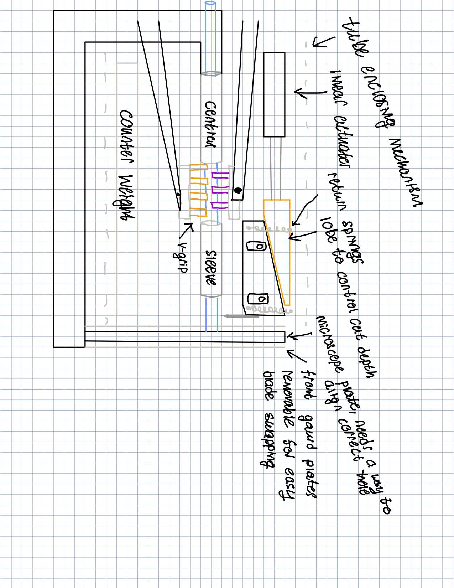
Concept sketch. The tube runs through a central sleeve with a V-grip to hold it. The blade holder is pushed in by a lobe driven by a linear actuator with return springs. A counterweight balances the rotating barrel. The microscope plate sits at the front, and removable guard plates cover the blade.
Download: Concept sketch (PDF)
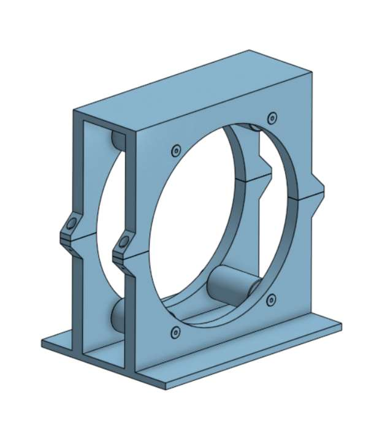
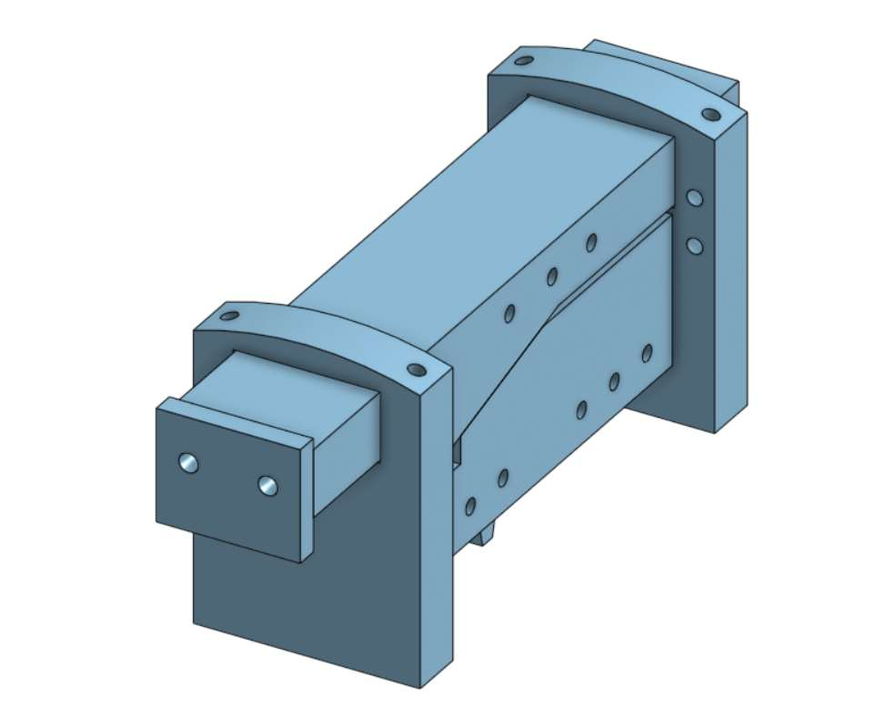
CAD of the first prototype. Left: the upright stand. Middle: the barrel in the stand. Right: the depth mechanism.
Download: Final Project Prototype Assem.stl
We decided to test the rotation and the cut-depth motion, because they are the two biggest unknowns. The prototype has a version of the mechanism that controls each. The barrel needs rollers to rotate on, and the original plan was two rollers on top and two on the bottom, held between two enclosing prints. For the cut depth, a lobe is pushed inward to drive the blade holder toward the center of the barrel. Springs and M3 screws control the motion and hold the pieces together.
The lobe profile is the biggest open question. If the angle is too shallow, the lobe can bind, because friction is higher than the force pushing on it. If it is too steep, the ratio of linear travel to change in depth puts a lot of strain on the linear actuator and thrust bushing, and it limits how precisely the depth can be controlled. This prototype tests a 15° lobe, since that seems to be a recommended middle ground, and it can be adjusted from the test results.
The goal is to find issues we have not addressed yet and to show that the motion can be done rigidly and predictably without excessive binding. The prototype is fully FDM printed, but part of the point is to identify which parts would suit a different process. It also has to confirm which electronics package suits the design, so we can order parts in time for assembly.
The prototype took four prints because of the number of parts. The first two ran overnight on our personal printers, a Bambu Lab A1 and a P1S. The A1 print with the barrel and the bottom of the stand succeeded. The P1S print failed because of a clogged nozzle, and only the rollers finished. The remaining parts were printed in the lab on the Prusa Core One printers.
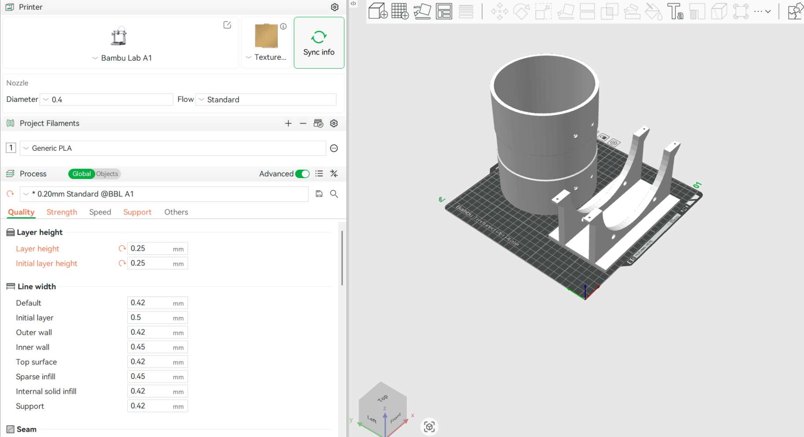
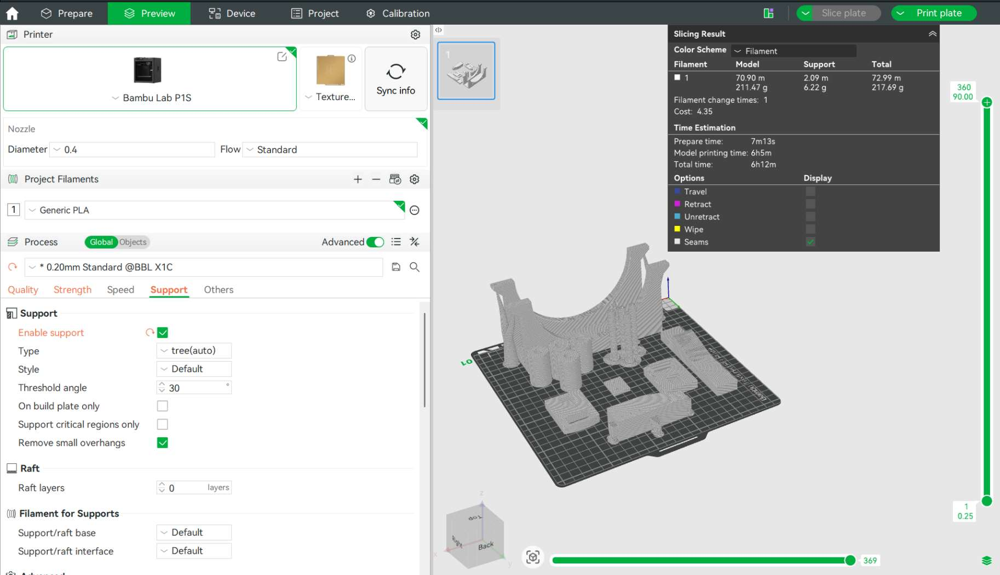
Slicer plates for prints 1 and 2. The A1 plate is on the left. The P1S plate on the right is the print that failed.
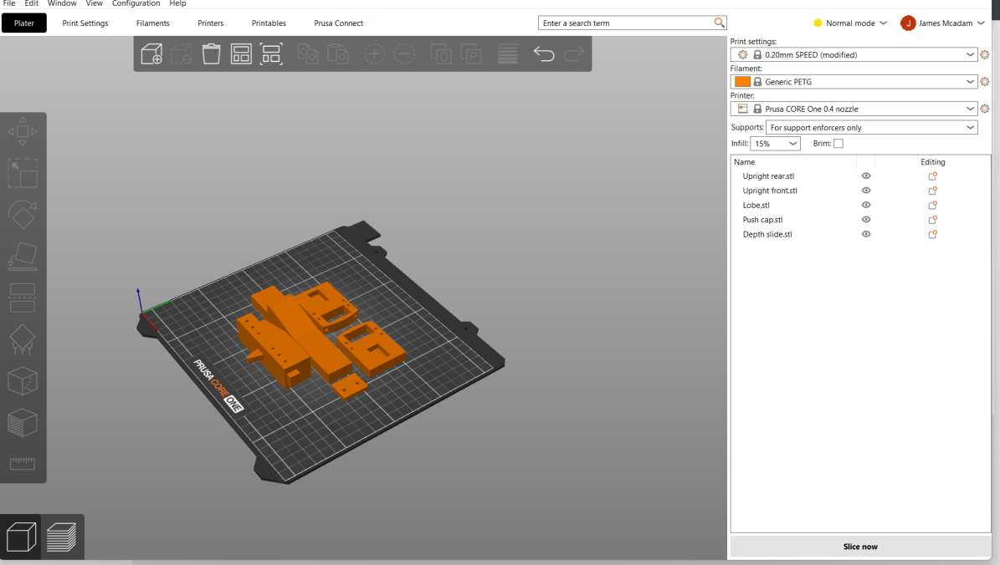
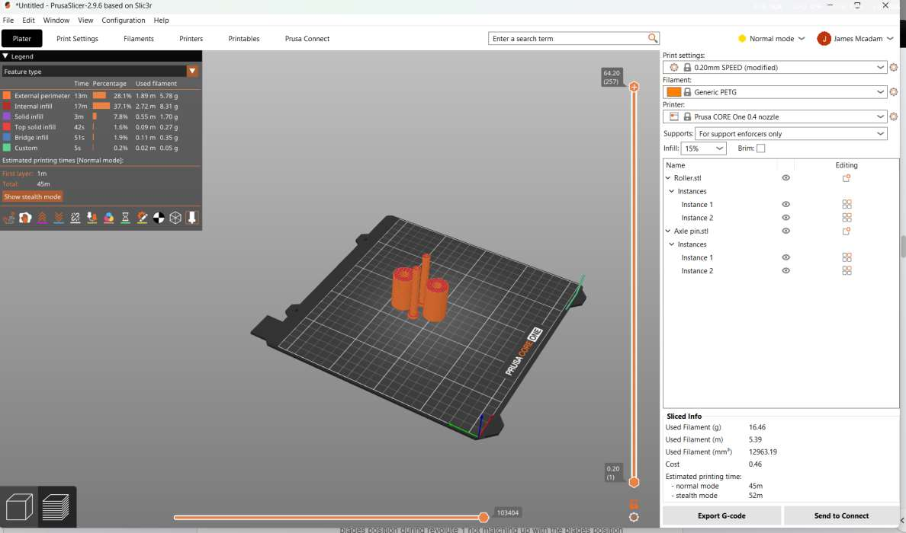
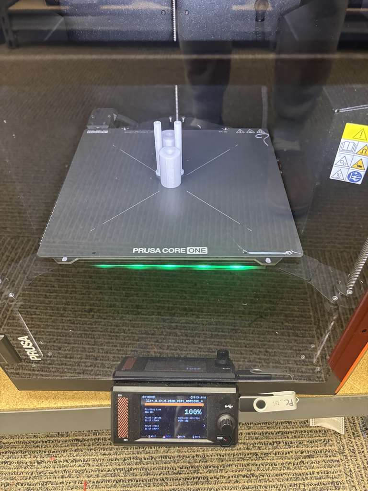
Slicer plates for prints 3 and 4, and the finished rollers and axle pins.
| Printer | Material | Parts | Time | Result | |
|---|---|---|---|---|---|
| 1 | Bambu Lab A1 | PLA, 0.25 mm layers | Barrel, bottom of stand | Overnight | Succeeded |
| 2 | Bambu Lab P1S | PLA, 0.25 mm layers, tree supports | Remaining parts | 6 h 12 min (217.69 g) | Failed, clogged nozzle (only the rollers finished) |
| 3 | Prusa Core One (lab) | PETG, 0.20 mm SPEED, 15% infill | Front and rear uprights, lobe, push cap, depth slide | — | Succeeded |
| 4 | Prusa Core One (lab) | PETG, 0.20 mm SPEED, 15% infill | 2 rollers, 2 axle pins | 45 min (16.46 g) | Succeeded |
Splitting the print across our personal printers overnight saved lab time, but it meant a failure was not caught until morning. The clogged nozzle on the P1S cost us parts and forced reprints in the lab right before the in-class showcase.
AI was used to help find sources and to draft the text of this page from our project notes, images, and sketches. I reviewed and edited the draft.